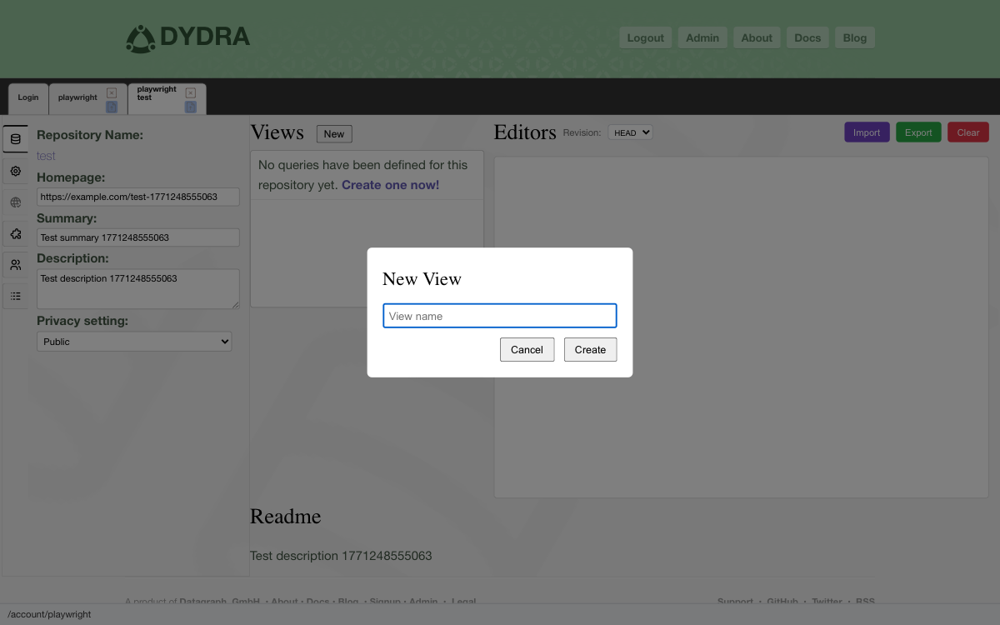
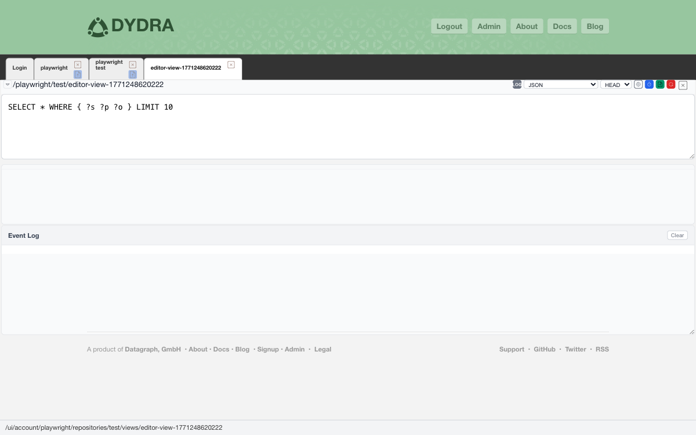
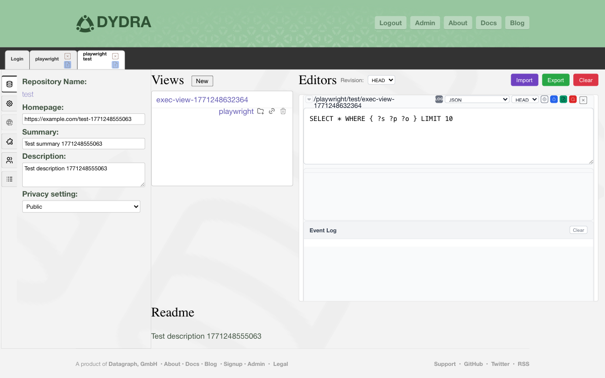
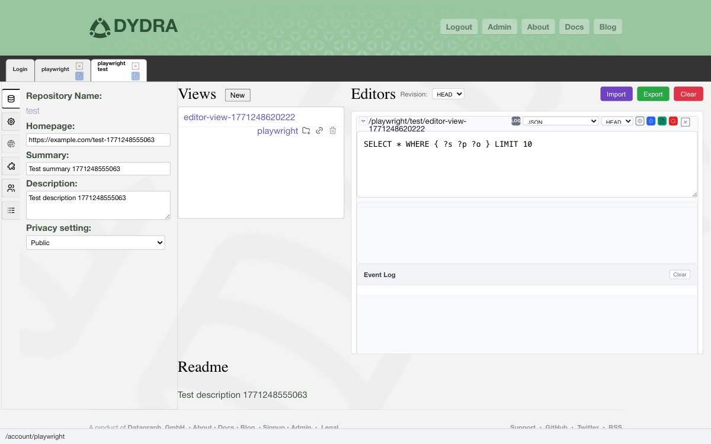

Dydra Studio · user manual · 04
View Operations
Views are saved SPARQL queries that can be executed against your repository data. This section covers creating, editing, executing, and managing SPARQL views in Dydra Studio.
Dydra Studio · user manual · 04
Views are saved SPARQL queries that can be executed against your repository data. This section covers creating, editing, executing, and managing SPARQL views in Dydra Studio.
A view is a named SPARQL query that is saved in your repository. Views allow you to:
To create a new view (saved SPARQL query):
Step 1
Navigate to the repository where you want to create the view.
Step 2
Find the views/queries section on the repository page.
Step 3
Click the New View or Create View button, or click the link that says "Create one now!" if no views exist yet.
Step 4
A dialog will appear prompting you to enter a view name. Enter a unique name for your view (use only the base name, not a full path).

Figure 1: View creation dialog with view name entered
Step 5
Click OK or press Enter to create the view.
Step 6
A confirmation popup will appear indicating that the view has been created. The popup will remind you to edit and save the query text to persist the view.

Figure 2: View creation confirmation popup with instructions
Step 7
An editor panel will appear in the repository pane's editor list. You can now enter your SPARQL query.
Important
A newly created view does not have any query text yet. You must edit the query text and save it to persist the view. Until you save the query text, the view is not fully created on the server.
You can edit views directly in the repository pane's editor list.
Step 1
Navigate to the repository containing the view you want to edit.
Step 2
In the views list, click on the view name (the text link).
Step 3
An editor panel will appear in the "Editors" section of the repository pane. Note: The editor will open with the default SPARQL query template. The view's actual query text is NOT automatically loaded. You will need to manually enter or load the query text.
Step 1
In the editor panel, locate the query text area (the SPARQL editor).
Step 2
Modify the SPARQL query text as needed. The editor provides syntax highlighting and autocomplete features.

Figure 3: View editor in repository pane with SPARQL query text entered
Step 3
Click the Save button in the editor panel to save your changes to the server.
Step 4
You will see a confirmation message when the view is successfully saved.
Tip
You can use keyboard shortcuts in the editor. Press Ctrl+Enter (or Cmd+Enter on Mac) to execute the query without saving.
You can open a view editor in its own pane for a larger editing area and better organization.
Step 1
Navigate to the repository containing the view you want to edit.
Step 2
In the views list, find the view you want to edit.
Step 3
Click the pane button (usually represented by a folder-plus icon) next to the view name.
Step 4
A new pane will open with a tab showing the view name. The editor will be displayed in this separate pane.

Figure 4: View editor in separate pane with SPARQL query text entered
Step 5
Edit the query text in the editor.
Step 6
Click the Save button to save your changes.
Note
You can have multiple view editors open simultaneously - some in the repository pane and some in separate panes. They operate independently.
You can execute a view to see the query results. Views can be executed in several ways.
Step 1
Open the view in an editor (either in the repository pane or a separate pane).
Step 2
Ensure the query text is correct and up to date.
Step 3
Select the desired output format from the media type selector (if available).

Figure 5: View editor with query text and output format selected, ready to execute
Step 4
Click the Run or Execute button, or press Ctrl+Enter (or Cmd+Enter on Mac).
Step 5
The query will execute and results will be displayed below the editor.
Views can be executed with the following output formats:
| Format | Media Type | Description |
|---|---|---|
| JSON | application/sparql-results+json |
Structured JSON results (default) |
| XML | application/sparql-results+xml |
XML format results |
| HTML | text/html |
Formatted HTML table |
| CSV | text/csv |
Comma-separated values |
| TSV | text/tab-separated-values |
Tab-separated values |
| Turtle | text/turtle |
RDF Turtle format |
| N-Triples | application/n-triples |
N-Triples RDF format |
| RDF/XML | application/rdf+xml |
RDF/XML format |
| JSON-LD | application/ld+json |
JSON-LD format |
| SVG | image/vnd.dydra.SPARQL-RESULTS+GRAPHVIZ+SVG+XML |
Graph visualization |
You can open a view's results in a new browser window, which displays the results in a table format with options for different output formats.
Step 1
Navigate to the repository containing the view.
Step 2
In the views list, find the view you want to display.
Step 3
Click the window button (usually represented by a link icon) next to the view name.

Figure 6a: View list showing the window button next to a view name
Step 4
A new browser window will open displaying the view results in a table format.

Figure 6b: View results displayed in a new browser window with table format and output format selector
Step 5
In the new window, you can select different output formats from a dropdown menu.
Step 6
The results will update to show the selected format.
Note
The new window requires authentication. The application automatically includes your authentication token when opening the view in a new window.
Browser Popup Blockers
If the new window does not open, check that your browser is not blocking popups for this site. You may need to allow popups for dydra.com.
You can delete views that you no longer need.
Warning
Deleting a view is permanent and cannot be undone. Make sure you have a backup of the query text if you might need it later.
Step 1
Navigate to the repository containing the view you want to delete.
Step 2
In the views list, find the view you want to delete.
Step 3
Click the delete button (usually represented by a trash icon) next to the view name.
Step 4
A confirmation dialog will appear asking you to confirm the deletion.

Figure 7: View deletion confirmation dialog with warning message
Step 5
Read the confirmation message carefully. It will indicate that the action cannot be undone.
Step 6
If you are sure you want to proceed, click OK or Confirm.
Step 7
The view will be deleted and removed from the views list. You will see a success message.
The SPARQL query editor provides several useful features for working with queries.
Within a single editor instance, you can have multiple query tabs:
You can reset the query text to its original saved state:
The editor includes an event log that shows:
You can drag a query editor tab outside the application window to open it as a standalone window:
If a view is not saving:
If a query fails to execute:
If a view doesn't appear in the list:
After creating and managing views, you can: